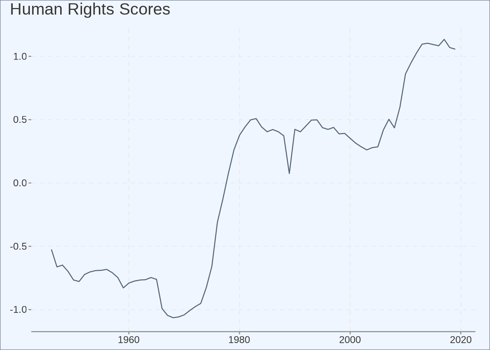
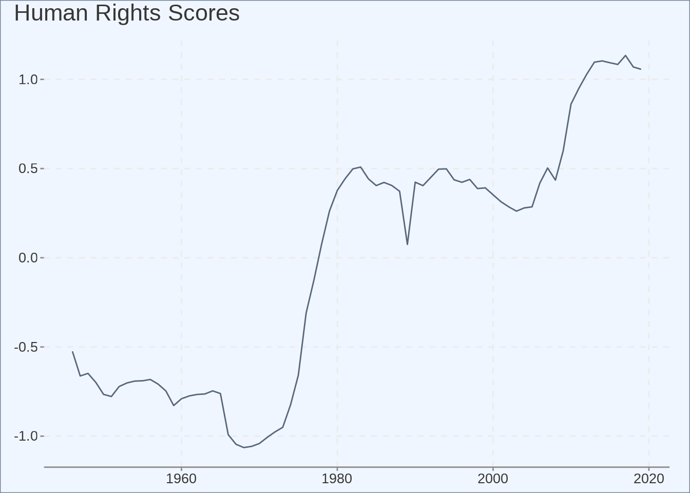

Testing R Code
Checking how r code runs inside a blog post
Test one
This is a test
Test two
This post includes R code
349871985, -0.13534160609779056
Piers York
July 10, 2022

This is a test
This post includes R code
349871985, -0.13534160609779056